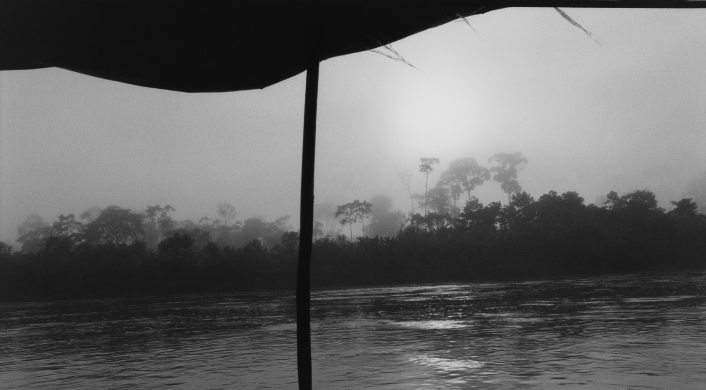
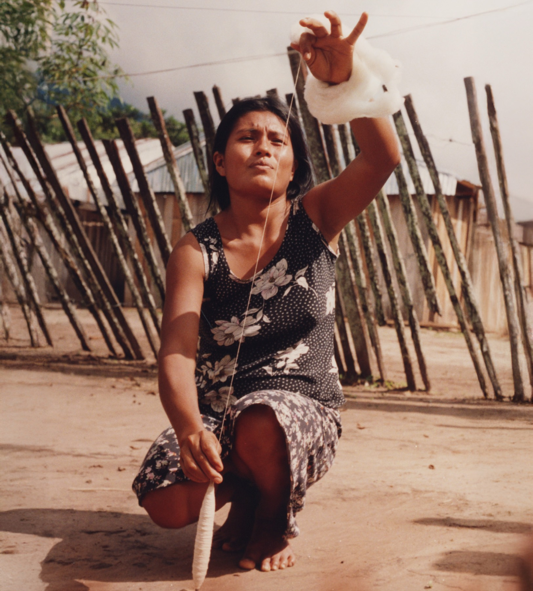
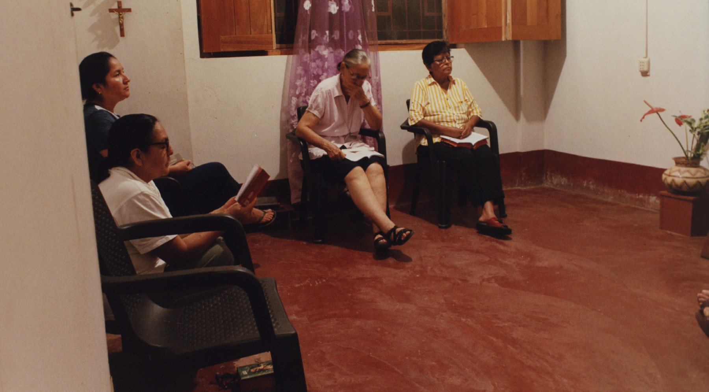

Casa productora de cine · Ciudad de México
En la Amazonía peruana, un grupo de monjas que ha dedicado más de cuatro décadas a defender la tierra, la agricultura y la cultura del pueblo shawi enfrenta ahora su batalla más íntima: que su propia misión no desaparezca con ellas.
Retrato íntimo de las fundadoras de la primera misión laica del Perú — sus sacrificios, su fe y su compromiso con la justicia. El primer largometraje de la casa: coproducción internacional México–España, actualmente en desarrollo y ruta de financiamiento, con rodaje previsto para 2027.


